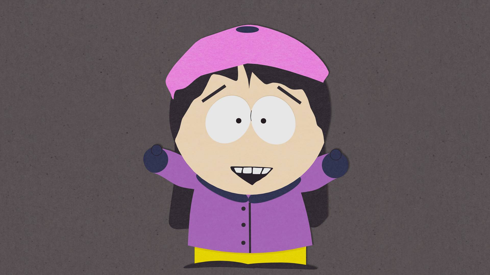
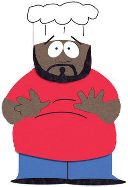
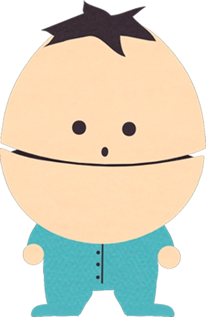

溫蒂
溫蒂是故事中登場頻率最高的女學生角色。她有一頭黑色長髮，穿戴粉紅色貝雷帽和紫色外套，最好的朋友是貝貝·史蒂文。
她是屎蛋的女朋友，兩人曾分手又復合過三次。
溫蒂是早熟的小孩，她具有較強的批判性、道德感和智慧，亦是一名女權主義者，也因為如此、她經常和阿ㄆㄧㄚˇ爭吵，
議題包括乳癌和無性別廁所等，阿ㄆㄧㄚˇ會罵她「婊子」或「妓女」。
雖然兩人通常僅只於爭吵，但在《乳癌發表會》一集裡，兩人進行了決鬥，最後溫蒂痛毆了阿ㄆㄧㄚˇ。

阿不拉老師
阿不拉老師是南方公園國民小學的木工課老師，在《槌哥對小凡》裡，他不斷地回想起自己已逝的未婚妻，嚼了大量的尼古丁口香糖來逃避回憶，最後打算自殺。
他把自己放在木工用的電鋸台上，但由於槌哥對小凡的對決，讓阿尼在過程中被電鋸殺死。
之後他並沒有顯著的表現，不過經常出現在劇集的背景中，偶爾會有台詞。

劉垂乃
在四賤客升上四年級後成為他們的新老師，他由特雷·帕克配音。劉垂乃有一對超級誇張的下垂乳房，且不穿胸罩，當她舉起手臂時會露出乳頭。
劉垂乃的名字常被學生們拿來開玩笑，而她也會嚴厲地糾正他們。在《性教育》裡，她將自己排斥性行為的觀念教給女學生們，讓女學生排斥與男學生接觸，間接導致男女學生對立。
而在《辛普森家庭演過了》一集裡，四賤客在咖啡裡加了海猴子並讓劉垂奶喝下，導致劉垂乃死亡(實際上是精液噎住喉嚨而亡)，在劉垂乃死後、賣假老師擔任四賤客的老師直到葛屁老師回來。

司機阿姨
她是南方公園國民小學的校車司機，在車上施行嚴格的紀律，無論成人或學生都禁止在她的車上嬉笑吵雜。
她的口頭禪是「閉嘴！你們這群死孩子！」她較醒目的表現是在《永遠的邊境小鎮》裡，因為校車卡在懸崖邊而外出求援，遇上經紀人後短暫地成為喜劇演員。

老爹
是《南方四賤客》裡少數的非裔美籍人物之一，南方公園國民小學的廚師。在故事初期，當四賤客進到餐廳的時候，他總是會說「你們好啊，崽子！」以關心他們，而他也是四賤客們遇到困擾或需要指導時經常會尋找的對象，
不過他的建議不見得對孩子們有幫助。他是個有才華的歌手，有時會以演唱靈魂音樂來回答孩子們的問題，他也曾出過唱片。在海耶斯離開《南方四賤客》團隊後，大廚在《大廚歸來》中死亡。
大廚的角色設計源自於艾薩克·海耶斯，以及特雷·帕克在科羅拉多就讀大學時實際遇過的餐廳從業人員。而在台灣版中將大廚設定為山東人，因此講話也是山東西南的腔調。
大廚的興趣之一是休閒性愛，無論是在家中或是渡假時，經常可以看到他和不同的年輕女性在一起做愛。
有次他為了籌措律師費而賣淫，幾乎和南方公園的每個女性都發生過性關係。
這個興趣直到他遇見司機阿姨才停止，在《女妖症候群》裡，大廚和司機阿姨相愛並論及婚嫁，直到婚禮進行途中，大廚才發現司機阿姨的原形是魅魔.，在魅魔死亡後，大廚又回歸了原本的生活。
通常樂意協助孩子們的困擾，而他也是四賤客少數信任的大人及忠實的朋友。
四賤客有時會在學生餐廳裡說出自己的困擾，有時會直接到大廚家找他幫忙，劇集初期的問題大多涉及成人與性，而大廚會以靈魂音樂的方式為他們解惑，不過孩子們不見得能理解。

葛屁老師
在大部分劇集裡，他是孩子們的導師。葛屁是個男同性戀者，但他否認自己的男同性戀身份且表現出恐同。
他的右手經常戴著布偶（藏鏡人）並以此進行教學。後來他逃到山上避世而居，最終正視自己的性傾向並出櫃，重新成為教師，負責教導幼稚園班級。
在第九季起他變性為女性，被稱為珍妮特·葛屁，在第十一季裡她成為女同性戀。在第十二季時二次變性，又成為一名男性。
在第十九季裡他參選美國總統，並在第二十季當選就任。派克表示，葛屁老師是《南方四賤客》裡最複雜的角色之一，特別是他在性與性別上的問題及與藏鏡人的關係。

維多利亞校長
在第一季至第十八季裡，她是南方公園國民小學的校長，有一頭金髮、戴眼鏡。維多利亞校長經常和賣假老師一起出現，通常是對學生訓話、宣布重要事項或發布人事命令。
在《乳癌發表會》中，她以自己身為乳癌倖存者的經驗激勵溫蒂，讓她能對抗阿ㄆㄧㄚˇ（溫蒂的癌症）。
她自第十九季起遭到解僱，之後在《葉佩雯》再度現身並解釋她遭解僱的真相。

雪泥
屎蛋的姊姊，13歲，她戴著牙套，脾氣暴躁，不喜歡屎蛋和他的朋友，早期的劇集裡常會毆打屎蛋、罵他「活化石」，不過當屎蛋面臨危機的時後，她仍是一個關愛弟弟的可靠姊姊。
在《貓咪發情趴》和《百老匯之戰》裡可以看到她交過男朋友，不過這些戀愛都以失敗告終。

賣假老師
他是學校裡的輔導老師。他有一個不成比例的大頭，經常會在句尾說「好唄」（M'kay）。
雖然他的說話方式和外表都略為比BB奇怪，但賣假老師基本上是負責任且關心孩子們的輔導老師，他有時會與維多利亞校長在一起、宣布一些重要訊息。他的輔導方式常反映現實世界中的一些教育爭議。
在《BB的小弟弟》一集裡，他談到了毒品教育，但因為用做教材的大麻被葛屁老師偷走而使他遭學校開除，後來事情以訛傳訛變成賣假老師販毒給國小兒童，也因而使他成為全民公敵，房東也因此將他趕出住處，他在沮喪之際反而自己碰觸了大麻和搖頭丸，他後來到戒毒中心消除了自己的毒癮。
在《困在衣櫃裡》中，當屎蛋被介紹到山達基教時，賣假老師也在於該教會裡的一位成員談話。

阿ㄆㄧㄚˇ媽
美麗、溫柔而且體貼，在劇集後期則稍微變得強硬一些。
特色之一是性濫交程度非比尋常，幾乎所有南方公園的成人（無論性別）都與她發生過性關係。根據《窮孩子》裡的描述，兼了兩份工作，不過阿ㄆㄧㄚˇ一家仍算是窮困的。

BB
是加拿大人，凱子的義弟。如同在《南方四賤客》裡的所有加拿大人一樣，BB有小圓眼和蛋形頭部，他的頭完全分成兩部份，說話時會上下分開。
BB出生於加拿大，他的父母把他送走、以避免他受可樂戰爭迫害。
凱子一開始不喜歡這個弟弟，且經常欺負他，他最常做的事就是像踢足球一樣踢BB，同時說「要踢傻屌囉！」
在BB和凱子的感情漸漸融洽後，就不再有這個行為了。
雖然在體型上沒有任何變化，但BB的語言能力隨著劇情的進展變得更好。
在《死亡明星》裡，他被麥可·傑克森的靈魂附身；在《女老師尬上了男孩》裡，他與女老師發生師生戀；在《搔弄私處》裡，他因誤服類固醇而早熟，並對凱子產生敵意。

老怪博士
老怪博士是研究遺傳工程的瘋狂科學家，角色影射《莫洛博士島》的主角莫洛博士。
他總是試圖幫助有需要的人，但他的實驗經常會導致委託者甚至整個南方公園陷入危機。
老怪博士用他的才華創造出一個又一個的怪異生物，例如有多個臀部的動物。在《人體自燃》裡，他創造的「有七的臀部的加拉巴哥象龜」甚至讓他差點得到諾貝爾獎。
小怪則是老怪博士的助手，他身形矮小且沉默寡言，並沒有透露詳細來歷，但從《大廚來也：南方四賤客專輯》可以推測，他是一個失敗的生科工程產物。


{kind=link}
{kind=link}
{kind=link}